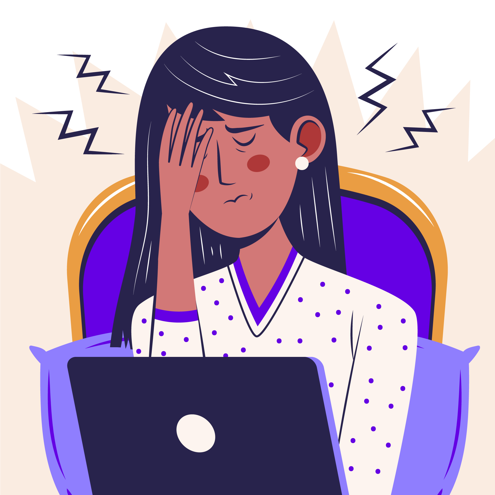
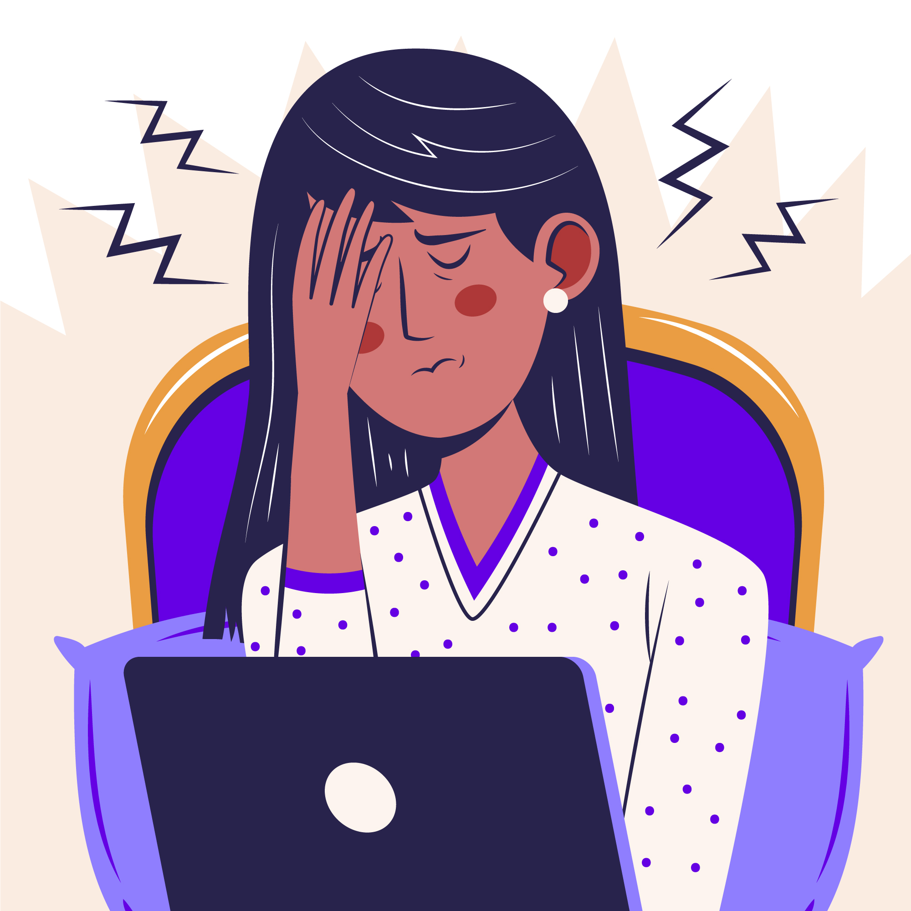

¿Dónde nos situamos?
Latinoamérica y el Caribe son las regiones del mundo con mayor inactividad física. Según el estudio “Worldwide trends in insufficient physical activity from 2001 to 2016: a pooled analysis of 358 population-based surveys with 1·9 million participants”, que registró el nivel de actividad física insuficiente en 168 países entre 2001 y 2016, estas regiones presentaron una prevalencia de inactividad física del 39,1%. Al contrario, hay países que presentan prevalencias menores al 30% y el promedio de los países en general es de 27,5%.
Sin embargo, la pandemia del COVID-19 resultó ser un factor clave en la disminución aún mayor de la actividad física. Al mirar cifras del estudio “Comparación y migración de la actividad física durante el confinamiento por covid-19 en Latinoamérica”, antes de la pandemia los hombres realizaban 217,92 minutos de ejercicio a la semana, los cuales disminuyeron a 168,34 minutos. Por su parte, las mujeres hacían 199,78 minutos de ejercicio semanalmente, cifra que se redujó a 176,70 minutos.
Además, la pandemia afectó en gran medida la salud mental de la población. Según la Organización Panamericana de la Salud en su estudio “Fortaleciendo las respuestas de salud mental al COVID-19 en las Américas: un análisis de la política sanitaria y recomendaciones”, aumentaron los casos de estrés, ansiedad, los ataques de pánico, la depresión y las tasas de suicidio. En esta época, la mayoría de las personas tuvieron que adaptar su manera de vivir a las restricciones de salida, los aforos y el teletrabajo, afectando su día a día. De hecho, en su informe “The COVID-19 HEalth caRe wOrkErs Study (HEROES)” se advierte que el personal de salud de once países de América Latina también presentó altas tasas de síntomas depresivos y malestar psicológico. Con esto, se evidencia cómo se vio afectada de gran manera la salud mental en el periodo del coronavirus.
Con estos antecedentes, nos preguntamos cuál habrá sido la conexión entre la actividad física y la salud mental en esta época. Por ello, en esta página se buscará demostrar que: una mayor frecuencia de actividad física disminuyó los niveles relacionados a indicadores de salud mental en adultos latinos entre 18 y 45 años durante 2021. En particular, los niveles de estrés, ansiedad, autoestima y depresión disminuyen con una mayor cantidad de horas de ejercicio.


 
